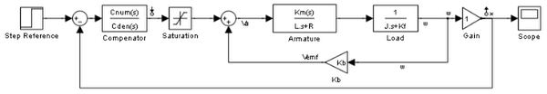
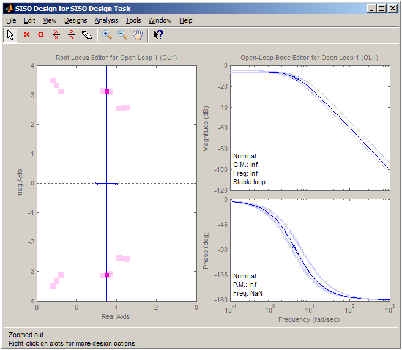
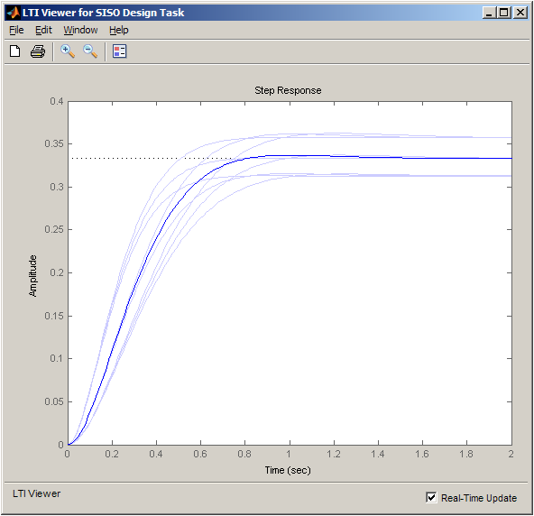
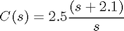
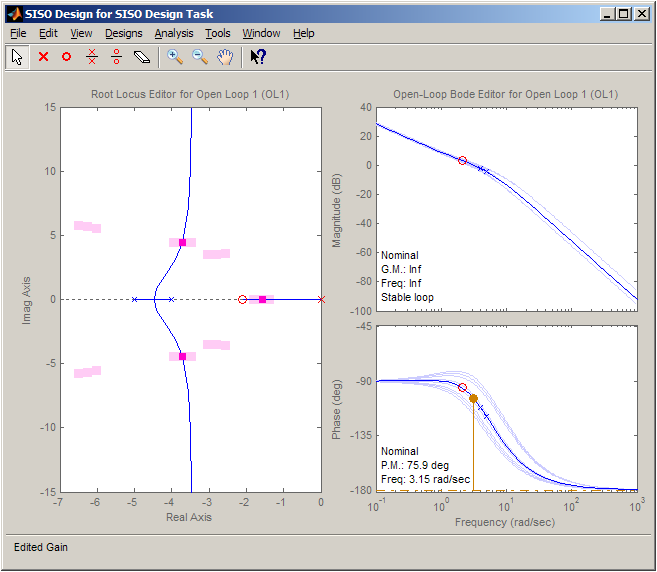
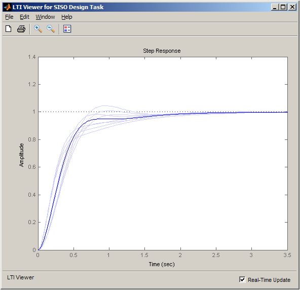

Reference Tracking of a DC Motor with Parameter Variations
This demo illustrates how to generate an array of LTI models that represents the plant variations of a control system from a Simulink® model. This array of models is used in the SISO Design Tool for control design.
Contents
DC Motor Model
In armature-controlled DC motors, the applied voltage Va controls the angular velocity of the shaft. A simplified model of the DC motor is shown below.

Opening the Model and Performing Batch Linearization
Open the Simulink model for the DC motor.
scdDCMotor
mdl = 'scdDCMotor';
 The goal of the controller is to provide tracking to step changes in reference angular velocity.
For this example, the physical constants for the motor are:
- R = 2.0 +/- 10% Ohms
- L = 0.5 Henrys
- Km = 0.1 Torque constant
- Kb = 0.1 Back emf constant
- Kf = 0.2 Nms
- J = 0.02 +/- .01 kg m^2/s^2
Note that the parameters R and J are specified as a range of values.
To design a controller which will work for all physical parameter values, we create a representative set of plants by sampling these values.
The values of R and J are sampled at their nominal, minimum and maximum values.
R = [2,1.8,2.2]; J = [.02,.03,.01];
For each combination of the sample values of J and R, a linearized model of the DC Motor plant is obtained. This is done by specifying a input linearization point at the output of the controller block and a linearization output point with loop opening at the output of the load block as shown in the model. The following code performs a batch linearization and returns the LTI array sys.
% Get the handle to the model workspace hws = get_param(mdl, 'modelworkspace'); % Get the linearization I/O specified in the model io = getlinio(mdl); ct = 1; % Loop over the values of resistor parameters to create an array of plant models clear sys for ct1 = 1:numel(J) for ct2 = 1:numel(R) % Write the parameters R and J to the model workspace hws.assignin('J', J(ct1)); hws.assignin('R', R(ct2)); % Linearize the model sys(:,:,ct) = linearize(mdl,io); ct = ct+1; end end
Opening the SISO Design Tool
Now that we have a set of plant models, we use the SISO Design Tool to design a controller.
>> sisotool(sys)
The SISO Design Tool allows you to design a controller for the nominal plant model while simultaneously visualizing the effect on the plant set as shown below.

- The root locus editor displays the root locus for the nominal model and the closed loop pole locations associated with the set of plants.
- The Bode editor displays both the nominal model response and responses of the set of plants.

The step responses show that reference tracking is not achieved for any of the models in the set of plants.
Designing a Controller
Using the tools in the SISO Design Tool, the following compensator is designed for reference tracking.

The resulting design is shown below. The closed loop step response shows that the goal of reference tracking is achieved with zero steady-state error for all models defined in the plant set. However, if a zero percent overshoot requirement was necessary, you can see that not all responses would satisfy this requirement.


Exporting the Design and Validating in Simulink Model
To validate the design in the Simulink model, export the controller C using the export dialog. To open this dialog, select File > Export in the Control and Estimation Tools Manager. The values of the controller can be set in the model with the following commands
>> [Cnum,Cden] = tfdata(C,'v');
>> hws.assignin('Cnum',Cnum)
>> hws.assignin('Cden',Cden)
Summary
In this demo, we use batch linearizations to model the plant variations as an LTI array. The SISO Design Tool is then used to design a controller and analyze its performance for this set of plants. For additional information on using the multimodel features of the SISO Design Tool see Demo: "Compensator Design for a Set of Plant Models".
Close the model:
bdclose('scdDCMotor');